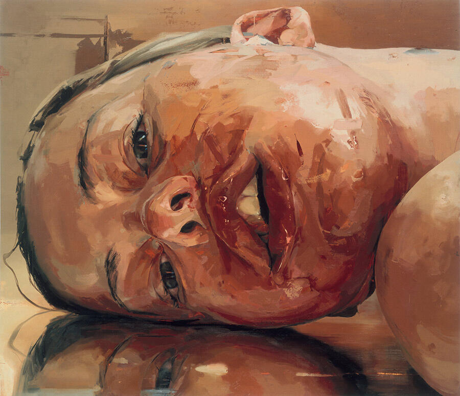

HISTORIA DEL ARTE

El arte, aunque herido y exhausto, no ha muerto; su corazón aún late, débil pero obstinado, en los márgenes donde la autenticidad resiste al mercado y a la impostura. Si el arte es la expresión del alma humana, entonces su extinción total sería imposible; mientras haya seres que sientan, sueñen y busquen sentido, el arte sobrevivirá. En cada trazo sincero, en cada nota compuesta sin vanidad, persiste una chispa del fuego antiguo que encendió las cavernas de Altamira y las catedrales góticas. Como señala Gablik (1991), el arte puede regenerarse cuando vuelve a conectar con los valores espirituales y comunitarios que le dieron origen; no necesita renunciar a la modernidad, sino recordar su propósito esencial. El arte es, en su naturaleza más profunda, un acto de fe; creer que lo invisible puede ser revelado a través de la forma, que lo efímero puede tocar la eternidad. Esa fe no desaparece con los tiempos, aunque cambie de rostro. Aun en la era digital, donde la imagen se produce y consume sin pausa, surgen artistas que buscan la trascendencia más allá de lo popular; creadores que, conscientes del vacío contemporáneo, intentan devolver al arte su dimensión humana. Según Elkins (2004), el arte no puede ser comprendido sin reconocer su componente de misterio; incluso en las expresiones más tecnológicas hay un deseo de comunión que trasciende la razón instrumental. Esta resistencia silenciosa puede verse en las corrientes de arte que rehúyen el espectáculo; en los talleres comunitarios, el arte terapéutico o los movimientos de arte ecológico, donde la creación se convierte en acto de sanación y reconexión con la naturaleza. En esos espacios, el arte vuelve a ser lenguaje del alma, no del mercado. Bourriaud (2002) ya advertía que, incluso en el contexto posmoderno, existen “micro utopías” donde el arte reconstruye vínculos humanos; pequeñas redes donde la estética se convierte en ética, y la creación recupera su sentido social.
El arte, como todo ser vivo, necesita morir para renacer; y su aparente agonía actual puede interpretarse como una etapa de purificación. La saturación del espectáculo, la comercialización y la ironía han vaciado su espíritu; pero ese mismo vacío abre la posibilidad de una nueva sensibilidad. Según Han (2015), solo en el silencio y la contemplación puede resurgir la belleza auténtica; y aunque el mundo actual parezca dominado por la velocidad y la distracción, hay un movimiento creciente hacia la lentitud, la atención plena y la sinceridad estética. En ese retorno a lo esencial, el arte encuentra su esperanza. La esperanza del arte contemporáneo no reside en los museos ni en las ferias internacionales; vive en la intimidad del gesto honesto. En un mural anónimo pintado en una calle pobre; en una canción compuesta para resistir; en la mirada de un niño que dibuja sin esperar aplausos. Ahí, en lo pequeño y sincero, el arte renace. Han (2015) sostiene que la belleza auténtica habita en lo discreto y en lo silencioso; y que solo al apartarnos del ruido del rendimiento podemos volver a contemplar. En ese sentido, la esperanza del arte no depende de su grandeza, sino de su capacidad para recordar lo humano. El arte, personificado, se levanta de su lecho de muerte; herido, pero no vencido. Ha comprendido su error: haber creído que la provocación era profundidad, que el escándalo era expresión. Ahora, en el susurro de los que aún crean desde el alma, el arte redescubre su pulso. El dolor de su crisis se convierte en aprendizaje; la decadencia, en purificación. Como afirma Sontag (2005), toda época de saturación estética genera su propia reacción espiritual; el exceso lleva inevitablemente a la búsqueda de lo esencial. Así, de entre las ruinas del arte vacío, surge un nuevo anhelo de significado. El futuro del arte no está perdido; simplemente, se está transformando. Quizás su destino no sea volver a las formas clásicas, sino encontrar un equilibrio entre la técnica y el espíritu, entre la libertad y la verdad. El arte digital, cuando se usa con conciencia, también puede ser un puente; herramientas como la inteligencia artificial o la realidad aumentada no tienen por qué destruir lo humano, sino que pueden ampliarlo, si se orientan hacia la belleza y no hacia el ego. Groys (2016) sostiene que la tarea del artista contemporáneo consiste en “preservar lo vivo en medio de la automatización”; un desafío que redefine la creación como acto de resistencia ontológica.
Aun en los lugares más insospechados, el arte se manifiesta con fuerza renovada. El auge de las expresiones populares, las intervenciones urbanas y las plataformas digitales independientes demuestra que la creatividad no puede ser monopolizada por las élites ni sofocada por el mercado. El arte callejero, los murales sociales o el arte feminista, por ejemplo, son respuestas legítimas a la deshumanización; nacen del dolor, pero también del deseo de transformación. Como apunta Bishop (2012), el arte participativo no solo produce objetos, sino experiencias colectivas que restauran la empatía y la memoria. Allí donde el arte vuelve a servir a la vida, vuelve también la esperanza. El arte, por tanto, no es un cadáver; es un ser que atraviesa una crisis existencial, pero que aún conserva su espíritu. Y esa crisis, aunque dolorosa, es necesaria; sin ella no habría conciencia del vacío, ni deseo de plenitud. La esperanza no está en las instituciones, sino en la capacidad del ser humano de volver a crear por amor a la vida, no por reconocimiento. Cada obra nacida de la sinceridad es un latido que impide la muerte total del arte. En palabras de Berger (1972), “el arte no puede cambiar el mundo, pero puede cambiar la manera en que lo miramos”; y en esa mirada renovada reside toda posibilidad de redención. En definitiva, la esperanza del arte no es una ilusión romántica, sino una certeza antropológica; mientras exista el ser humano, existirá la necesidad de crear. El arte no desaparecerá, porque es la manifestación más pura del deseo de eternidad. Puede mutar, enfermar, degradarse, pero siempre renace; tal como el alma que, tras el sufrimiento, encuentra sentido en su propia herida. Así, el arte contemporáneo, incluso en su desolación, prepara el terreno para un nuevo amanecer estético. Quizás el futuro del arte no consista en deslumbrar, sino en sanar; no en gritar, sino en escuchar; no en vender, sino en amar. El arte, ese ser viejo y cansado, mira hacia el horizonte y sonríe; ha sobrevivido a guerras, dogmas, máquinas y modas; y lo seguirá haciendo, porque su esencia no pertenece al tiempo, sino al espíritu. Mientras haya un corazón que sienta y una mente que imagine, el arte respirará; y con él, la humanidad.